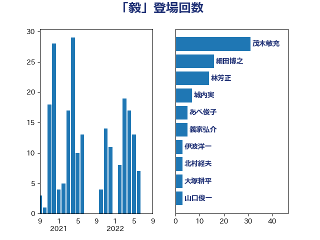

単語「毅」

| 茂木敏充 | 自由民主党 | 31 回 |
| 細田博之 | 自由民主党 | 16 回 |
| 林芳正 | 自由民主党 | 14 回 |
| 城内実 | 自由民主党 | 7 回 |
| あべ俊子 | 自由民主党 | 5 回 |
| 義家弘介 | 自由民主党 | 5 回 |
| 伊波洋一 | 無所属 | 3 回 |
| 北村経夫 | 自由民主党 | 3 回 |
| 大塚耕平 | 国民民主党 | 3 回 |
| 山口俊一 | 自由民主党 | 3 回 |
| 木原誠二 | 自由民主党 | 3 回 |
| 渡辺周 | 立憲民主党 | 3 回 |
| 笠井亮 | 日本共産党 | 3 回 |
| 薗浦健太郎 | 自由民主党 | 3 回 |
| 金田勝年 | 自由民主党 | 3 回 |
| 加藤勝信 | 自由民主党 | 2 回 |
| 山谷えり子 | 自由民主党 | 2 回 |
| 岩屋毅 | 自由民主党 | 2 回 |
| 平口洋 | 自由民主党 | 2 回 |
| 平木大作 | 公明党 | 2 回 |
| 杉本和巳 | 日本維新の会 | 2 回 |
| 松原仁 | 立憲民主党 | 2 回 |
| 根本匠 | 自由民主党 | 2 回 |
| 森英介 | 自由民主党 | 2 回 |
| 橋本岳 | 自由民主党 | 2 回 |
| 海江田万里 | 立憲民主党 | 2 回 |
| 芳賀道也 | 国民民主党 | 2 回 |
| 豊田俊郎 | 自由民主党 | 2 回 |
| 赤羽一嘉 | 公明党 | 2 回 |
| 鈴木馨祐 | 自由民主党 | 2 回 |
| 三宅伸吾 | 自由民主党 | 1 回 |
| 上杉謙太郎 | 自由民主党 | 1 回 |
| 中谷真一 | 自由民主党 | 1 回 |
| 伊藤忠彦 | 自由民主党 | 1 回 |
| 佐藤信秋 | 自由民主党 | 1 回 |
| 佐藤正久 | 自由民主党 | 1 回 |
| 原口一博 | 立憲民主党 | 1 回 |
| 古屋範子 | 公明党 | 1 回 |
| 古川禎久 | 自由民主党 | 1 回 |
| 古賀之士 | 立憲民主党 | 1 回 |
| 宮崎政久 | 自由民主党 | 1 回 |
| 山田宏 | 自由民主党 | 1 回 |
| 岸信夫 | 自由民主党 | 1 回 |
| 斎藤洋明 | 自由民主党 | 1 回 |
| 松下新平 | 自由民主党 | 1 回 |
| 枝野幸男 | 立憲民主党 | 1 回 |
| 柴田巧 | 日本維新の会 | 1 回 |
| 横山信一 | 公明党 | 1 回 |
| 永岡桂子 | 自由民主党 | 1 回 |
| 浜田靖一 | 自由民主党 | 1 回 |
| 盛山正仁 | 自由民主党 | 1 回 |
| 石井章 | 日本維新の会 | 1 回 |
| 石原宏高 | 自由民主党 | 1 回 |
| 石田真敏 | 自由民主党 | 1 回 |
| 福島みずほ | 社会民主党 | 1 回 |
| 美延映夫 | 日本維新の会 | 1 回 |
| 羽田次郎 | 立憲民主党 | 1 回 |
| 菅義偉 | 自由民主党 | 1 回 |
| 西村智奈美 | 立憲民主党 | 1 回 |
| 野田佳彦 | 立憲民主党 | 1 回 |
| 馬場伸幸 | 日本維新の会 | 1 回 |
| 高橋光男 | 公明党 | 1 回 |
| 高鳥修一 | 自由民主党 | 1 回 |